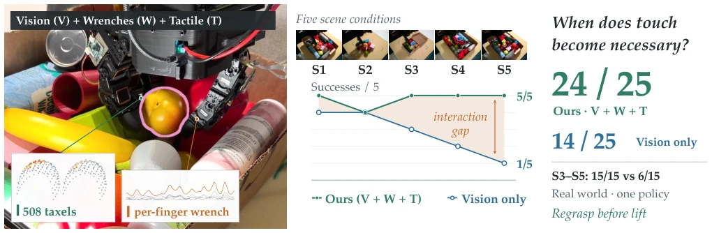
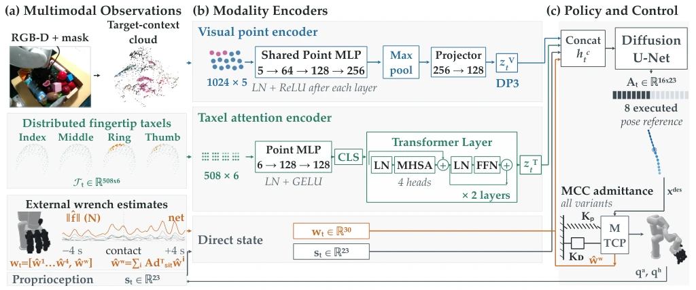
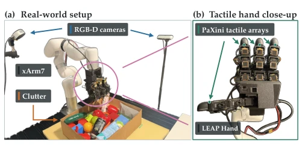
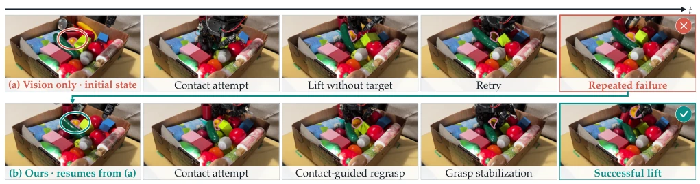
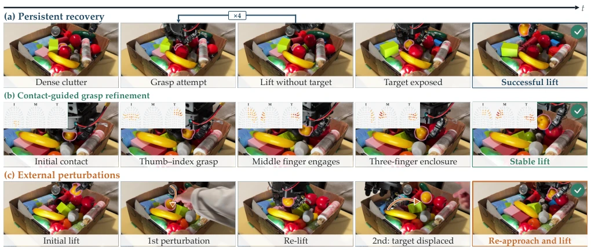

This paper accomplishes practical work: in cluttered dexterous grasping, when exactly does touching work better than seeing? The authors did not employ those fancy VLA large models, but rigorously controlled variables, testing vision, force, and touch separately. The results were quite striking: in simple scenarios, vision suffices; upon encountering occlusion and narrow spaces, relying solely on vision renders the system blind. Although the LEAP hand fingers are a bit thick, this "control variable method" is much more substantial than papers that only show success rates. However, the conclusion of treating touch as an "optional plugin" rather than a "standard configuration" is quite friendly to industry, saving the need to pile up sensors for a 5% improvement. But this also exposes the current strategy's inertia of visual dependency; once vision fails, strategy recovery capability remains limited, and a single hardware platform limits generalization. Charts intuitively show the trend of the "vision-interaction gap" widening with difficulty, which is valuable for understanding the necessity of multimodality.
From warehouse sorting to home services, grasping target objects in cluttered environments is a fundamental problem [1]. Existing vision-dominated methods (e.g., ClutterDexGrasp [2]) fail under severe occlusion because vision cannot directly perceive load and sliding. Although tactile and force sensing can supplement contact information [19], there is a lack of systematic evaluation: when exactly is tactile sensing necessary? Existing work often mixes hardware, tasks, and policy architectures, unable to isolate the contribution of sensing modalities [37]. This paper aims to fill this gap, quantify the gap between vision and interaction perception, and avoid blindly stacking sensors. Especially for multi-finger dexterous hands, the complexity of contact geometry makes pure vision planning difficult to guarantee grasp stability, and existing benchmarks mostly focus on synthetic data, lacking rigorous comparison of real physical interaction. We need to know under what conditions interaction signals are key to decision-making, rather than merely icing on the cake.

Fig. 1: Interaction sensing becomes decisive as cluttered dexterous grasping gets harder. Left: one policy grasps a designated target (magenta contour) using RGB-D vision, per-finger wrench estimates, and 508 distributed fingertip taxels (insets). Center: per-condition success over the five scene conditions S1–S5; Vision only falls from 4 / 5 to 1 / 5 while Ours maintains a 4 / 5 to 5 / 5 success rate. The shaded region marks the widening interaction gap. Right: aggregate results, with Ours at 24 / 25 (15 / 15 on S3–S5) against 14 / 25 (6 / 15) for Vision only; the underlying recovery behavior is analyzed in Fig. 5.
The system is based on xArm7 and LEAP hand, equipped with 508 taxels and torque estimation. The pipeline is divided into perception, encoding, fusion, and execution. Vision input is RGB-D point cloud, using a DP3-style encoder mapped to 128-dimensional features; tactile input is 508 force-sensitive elements, extracting global contact summary through a two-layer Transformer attention network; torque estimation is directly normalized as input. The policy layer adopts Diffusion Policy, fusing multimodal information through feature concatenation. The key innovation lies in fixing the underlying Compliant Controller (MCC [47]), ensuring all strategies run under the same physical contact response, thereby purely evaluating the differences in perception inputs. This design strips away the interference of control strategies on results, making the "information content" itself the variable. Additionally, compared complex fusion architectures like GNN and FC-full, found that direct concatenation is more robust when data volume is limited, and avoids the risk of overfitting specific contact patterns. Encoder design preserves spatial geometric information, rather than simple force value statistics.

Fig. 2: Overview of our multimodal policy and compliant execution stack. (a) An RGB-D target mask is converted into a target–context point cloud; distributed fingertip taxels, external wrench estimates, and proprioception provide complementary interaction and robot-state observations. (b) The visual cloud and taxel field are encoded by a point encoder and a two-layer attention encoder, respectively, while wrench and proprioceptive states are provided directly. (c) The selected representations condition a diffusion policy whose receding-horizon pose and hand-joint references are executed through the shared admittance controller.

Fig. 3: Real-world platform. (a) The xArm7–LEAP Hand system operates in clutter under two calibrated RGB-D views. (b) Four PaXini fingertip arrays provide 508 three-axis taxels.
200 physical experiments were conducted under 5 scene conditions (S1-S5). S3-S5 gradually increase occlusion and constraints. Results show, VWT-Attn success rate 24/25, Vision-only only 14/25, gap significantly widens in difficult scenes. Wrench helps early rejection of invalid contact, Taxel helps confirm grasp quality. Ablation experiments show, simple feature concatenation is superior to complex GNN or PolicyConsensus fusion architectures. Failure cases mainly focus on target fully occluded or local action stagnation, indicating need for more persistent state estimation. Experiments also compared reproduction of ClutterDexGrasp [2], found it has safety issues on real hardware. Behavior analysis shows, interaction perception strategy can trigger regrasping earlier, reducing invalid lift attempts, improving execution efficiency. Specific metrics such as Duration and Full lift attempts both confirm the optimization effect of interaction feedback on closed-loop behavior.

Fig. 5: Vision-only failure and interaction-aware recovery. (a) Vision only repeatedly contacts the target region but lifts without the target. (b) Starting from the terminal state of (a), Ours uses interaction feedback to regrasp, stabilize the contact, and successfully lift the target.

Fig. 6: Qualitative performance and robustness of Ours. (a) Persistent recovery under dense clutter exposes the target and enables a subsequent successful lift. (b) Contact-guided refinement progresses from initial contact to a three-finger enclosure and stable lift; I, M, and T denote the index, middle, and thumb taxel arrays, and warmer colors indicate larger force magnitude. (c) The policy recovers from two external perturbations, re-approaching the displaced target and completing the lift.